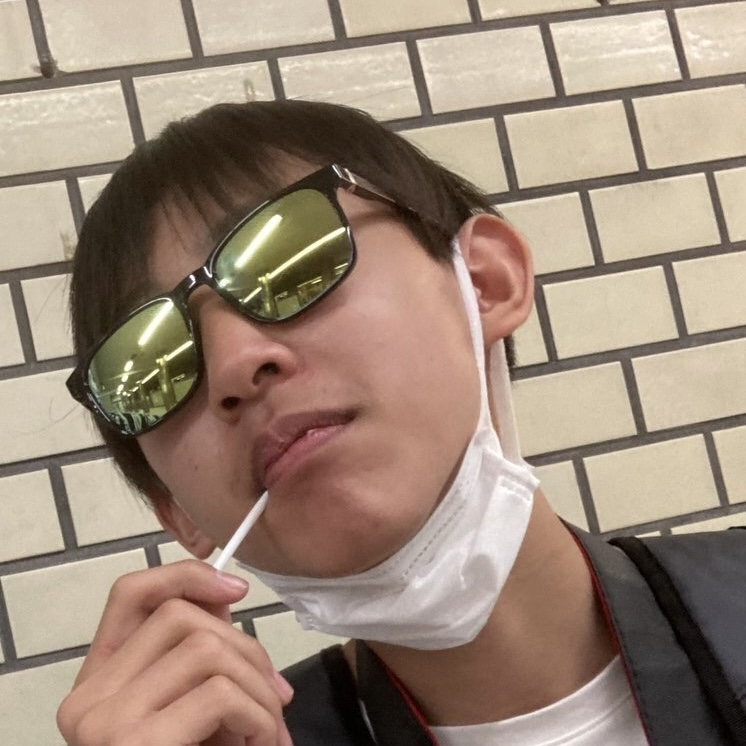
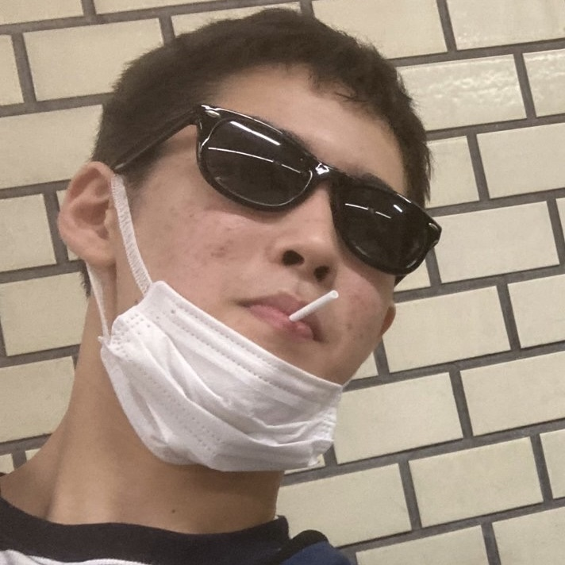
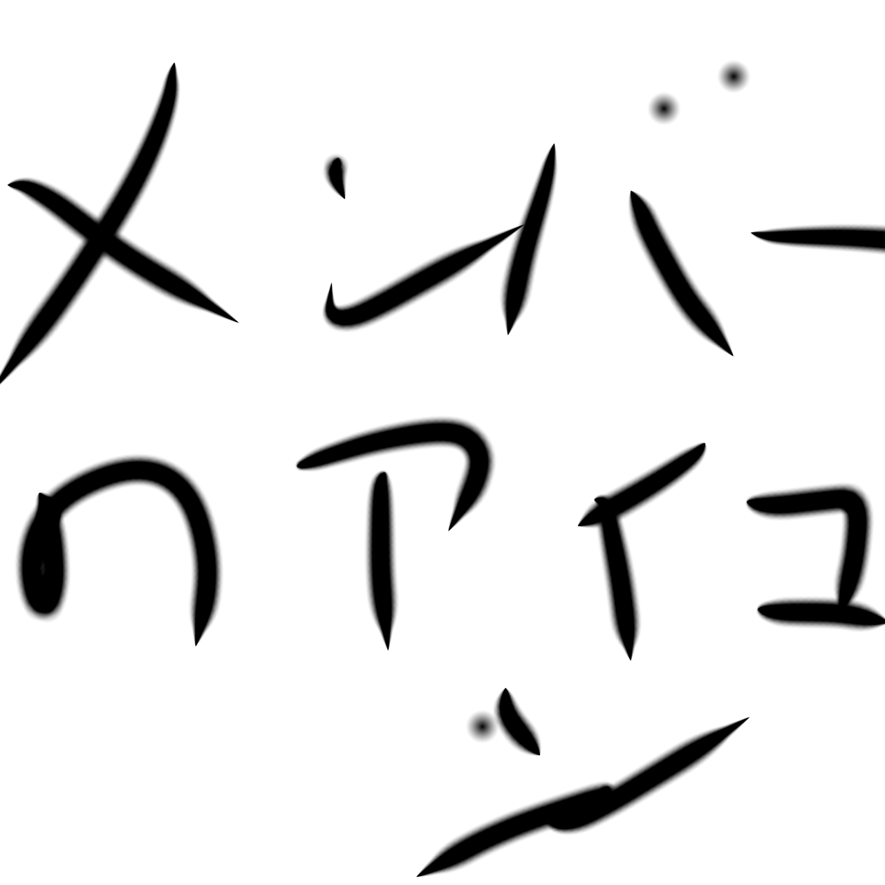

さち子
LIC目線協会の頼れるリーダー。数か月オーストラリアに留学に行って目線協会の仕事から逃亡した。
動画の編集が速いけれど出演回数は少ない。出演（？）、編集担当。編集の速度がメンバーで一番速く、動画のストックがない時には助けてくれるが、決まった仕事を期間内に終わらせることは難しい。LIC目線協会の創設者。横浜ファン。めっちゃ陽キャ。
きのこじ
目線協会のサブリーダー、出演、編集担当。ボケる数とスべ数はトップクラス。LIC目線協会のレギュラーメンバーの活動名をほとんど決めた。編集アプリのiMovieを愛用（？）しており、編集能力はメンバー1。スマホのSIM カードがない状態の時が多く連絡が取れないので集合するのに時間がかかる。阪神ファン。ゆるキャラ。
饅頭詐欺
目線協会のネタ枠兼会計係。出演、編集、企画、ゲームマスター、運営、準備、広報担当。ショート動画をほとんど編集している。よく企画中にやらかし壊すことも。今のところ（2024年）全ての企画に参加しており、結果も残している。2023年の春から鉄道にハマったのでメンバーの中では鉄道知識は少ない。ソフトバンクファン。あまり人間と認識されていないので陽キャでも陰キャでも変キャラでもない。 出演、チケット取り担当。目線協会1の鉄オタで、鉄オタ歴＝年齢。野球をメンバー1愛している男だが、上手さでいうと最下位。個人でもYouTubeをやっているらしいが、アカウントは誰も知らない。（登録者は皆無）ボケもツッコミもトップクラスだが、人前ではあまりネタを披露しない。歴浅めの阪神ファン。陽キャ寄りの陰キャ？
クロスマン52世
カメラマン、編集担当。プロスピがとても上手い元名人。鉄道の知識はほとんどないが、プロスピの技量でし ギュラーメンバーになった。運動も勉強も性格も外見も財産も目線協会トップ。よく同じ塾や他の学校の女子と夜まで遊びに行っており、撮影や目線協会の宴会もキャンセルする。けどめっちゃ人見知り。巨人ファン。多分
陰キヤ
出演（？）、編集（？）、ゲームマスター（？）。目線協会のフリーターで、目立った仕事はほとんどない。阪神ファンで、年に10回以上甲子園に行く。陽キャではありません。幼キヤです。書くことがないのでこれで終わります